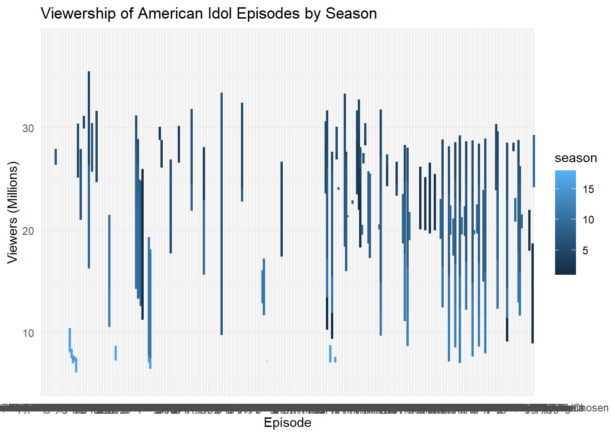

Placeholder file for the future Tidy Tuesday exercise.
# Data Exploration #summary(auditions)
season audition_date_start audition_date_end audition_city
Min. : 1.00 Min. :2002-04-20 Min. :2002-04-22 Length:142
1st Qu.: 6.00 1st Qu.:2006-08-11 1st Qu.:2006-08-11 Class :character
Median :10.00 Median :2010-09-05 Median :2010-09-05 Mode :character
Mean :10.37 Mean :2011-04-14 Mean :2011-04-14
3rd Qu.:15.00 3rd Qu.:2015-09-05 3rd Qu.:2015-09-05
Max. :18.00 Max. :2019-09-21 Max. :2019-09-21
audition_venue episodes episode_air_date callback_venue
Length:142 Length:142 Length:142 Length:142
Class :character Class :character Class :character Class :character
Mode :character Mode :character Mode :character Mode :character
callback_date_start callback_date_end tickets_to_hollywood
Min. :2002-02-06 Min. :2002-02-06 Min. : 6.0
1st Qu.:2006-10-02 1st Qu.:2006-10-03 1st Qu.: 20.0
Median :2010-11-09 Median :2010-11-10 Median : 29.0
Mean :2011-06-11 Mean :2011-06-12 Mean : 41.8
3rd Qu.:2015-09-13 3rd Qu.:2015-09-14 3rd Qu.: 37.0
Max. :2019-09-21 Max. :2019-09-21 Max. :561.0
NA's :13 NA's :13 NA's :48
guest_judge
Length:142
Class :character
Mode :character
summary(eliminations)
season place gender contestant
Min. : 1.00 Length:456 Length:456 Length:456
1st Qu.: 4.00 Class :character Class :character Class :character
Median : 8.00 Mode :character Mode :character Mode :character
Mean : 8.86
3rd Qu.:13.00
Max. :18.00
top_36 top_36_2 top_36_3 top_36_4
Length:456 Length:456 Length:456 Length:456
Class :character Class :character Class :character Class :character
Mode :character Mode :character Mode :character Mode :character
top_32 top_32_2 top_32_3 top_32_4
Length:456 Length:456 Length:456 Length:456
Class :character Class :character Class :character Class :character
Mode :character Mode :character Mode :character Mode :character
top_30 top_30_2 top_30_3 top_25
Length:456 Length:456 Length:456 Length:456
Class :character Class :character Class :character Class :character
Mode :character Mode :character Mode :character Mode :character
top_25_2 top_25_3 top_24 top_24_2
Length:456 Length:456 Length:456 Length:456
Class :character Class :character Class :character Class :character
Mode :character Mode :character Mode :character Mode :character
top_24_3 top_20 top_20_2 top_16
Length:456 Length:456 Length:456 Length:456
Class :character Class :character Class :character Class :character
Mode :character Mode :character Mode :character Mode :character
top_14 top_13 top_12 top_11
Length:456 Length:456 Length:456 Length:456
Class :character Class :character Class :character Class :character
Mode :character Mode :character Mode :character Mode :character
top_11_2 wildcard comeback top_10
Length:456 Length:456 Mode:logical Length:456
Class :character Class :character NA's:456 Class :character
Mode :character Mode :character Mode :character
top_9 top_9_2 top_8 top_8_2
Length:456 Length:456 Length:456 Length:456
Class :character Class :character Class :character Class :character
Mode :character Mode :character Mode :character Mode :character
top_7 top_7_2 top_6 top_6_2
Length:456 Length:456 Length:456 Length:456
Class :character Class :character Class :character Class :character
Mode :character Mode :character Mode :character Mode :character
top_5 top_5_2 top_4 top_4_2
Length:456 Length:456 Length:456 Length:456
Class :character Class :character Class :character Class :character
Mode :character Mode :character Mode :character Mode :character
top_3 finale
Length:456 Length:456
Class :character Class :character
Mode :character Mode :character
summary(finalists)
Contestant Birthday Birthplace Hometown
Length:190 Length:190 Length:190 Length:190
Class :character Class :character Class :character Class :character
Mode :character Mode :character Mode :character Mode :character
Description Season
Length:190 Min. : 1.000
Class :character 1st Qu.: 5.000
Mode :character Median : 9.000
Mean : 8.863
3rd Qu.:13.000
Max. :17.000
summary(ratings)
season show_number episode airdate
Min. : 1.000 Min. : 1.00 Length:593 Length:593
1st Qu.: 4.000 1st Qu.: 9.00 Class :character Class :character
Median : 8.000 Median :18.00 Mode :character Mode :character
Mean : 8.295 Mean :19.24
3rd Qu.:12.000 3rd Qu.:29.00
Max. :18.000 Max. :44.00
18_49_rating_share viewers_in_millions timeslot_et dvr_18_49
Length:593 Min. : 5.38 Length:593 Length:593
Class :character 1st Qu.:12.57 Class :character Class :character
Mode :character Median :21.76 Mode :character Mode :character
Mean :19.88
3rd Qu.:26.09
Max. :38.10
NA's :3
dvr_viewers_millions total_18_49 total_viewers_millions
Length:593 Length:593 Length:593
Class :character Class :character Class :character
Mode :character Mode :character Mode :character
weekrank ref share nightlyrank
Length:593 Mode:logical Length:593 Min. :1.000
Class :character NA's:593 Class :character 1st Qu.:1.000
Mode :character Mode :character Median :2.000
Mean :2.083
3rd Qu.:3.000
Max. :4.000
NA's :569
rating_share_households rating_share
Length:593 Length:593
Class :character Class :character
Mode :character Mode :character
summary(seasons)
season winner runner_up original_release
Min. : 1.00 Length:18 Length:18 Length:18
1st Qu.: 5.25 Class :character Class :character Class :character
Median : 9.50 Mode :character Mode :character Mode :character
Mean : 9.50
3rd Qu.:13.75
Max. :18.00
original_network hosted_by judges no_of_episodes
Length:18 Length:18 Length:18 Min. :16.00
Class :character Class :character Class :character 1st Qu.:18.25
Mode :character Mode :character Mode :character Median :19.00
Mean :19.50
3rd Qu.:20.25
Max. :24.00
NA's :14
finals_venue mentor
Length:18 Length:18
Class :character Class :character
Mode :character Mode :character
summary(songs)
season week order contestant
Length:2429 Length:2429 Min. : 1.000 Length:2429
Class :character Class :character 1st Qu.: 3.000 Class :character
Mode :character Mode :character Median : 5.000 Mode :character
Mean : 5.931
3rd Qu.: 8.000
Max. :40.000
song artist song_theme result
Length:2429 Length:2429 Length:2429 Length:2429
Class :character Class :character Class :character Class :character
Mode :character Mode :character Mode :character Mode :character
summary(tuesdata)
Length Class Mode
auditions 12 spec_tbl_df list
eliminations 46 spec_tbl_df list
finalists 6 spec_tbl_df list
ratings 17 spec_tbl_df list
seasons 10 spec_tbl_df list
songs 8 spec_tbl_df list
# A tibble: 6 × 6
Contestant Birthday Birthplace Hometown Description Season
<chr> <chr> <chr> <chr> <chr> <dbl>
1 Kelly Clarkson 24-Apr-82 Fort Worth, Texas Burleso… "She perfo… 1
2 Justin Guarini 28-Oct-78 Columbus, Georgia Doylest… "He perfor… 1
3 Nikki McKibbin 28-Sep-78 Grand Prairie, Texas <NA> "She had p… 1
4 Tamyra Gray 26-Jul-79 Takoma Park, Maryla… Atlanta… "She had a… 1
5 R. J. Helton 17-May-81 Pasadena, Texas Cumming… "J. Helton… 1
6 Christina Christian 21-Jun-81 Brooklyn, New York <NA> ".Christin… 1
head(ratings)
# A tibble: 6 × 17
season show_number episode airdate `18_49_rating_share` viewers_in_millions
<dbl> <dbl> <chr> <chr> <chr> <dbl>
1 1 1 Auditions June 1… 4.8 9.85
2 1 2 Hollywood… June 1… 5.2 11.2
3 1 3 Top 30: G… June 1… 5.2 10.3
4 1 4 Top 30: G… June 1… 4.7 9.47
5 1 5 Top 30: G… June 2… 4.5 9.08
6 1 6 Top 30: G… June 2… 4.2 8.53
# ℹ 11 more variables: timeslot_et <chr>, dvr_18_49 <chr>,
# dvr_viewers_millions <chr>, total_18_49 <chr>,
# total_viewers_millions <chr>, weekrank <chr>, ref <lgl>, share <chr>,
# nightlyrank <dbl>, rating_share_households <chr>, rating_share <chr>
head(seasons)
# A tibble: 6 × 10
season winner runner_up original_release original_network hosted_by judges
<dbl> <chr> <chr> <chr> <chr> <chr> <chr>
1 1 Kelly Cla… Justin G… June 11 (2002-0… Fox Ryan Sea… Paula…
2 2 Ruben Stu… Clay Aik… January 21 (200… Fox Ryan Sea… Paula…
3 3 Fantasia … Diana De… January 19 (200… Fox Ryan Sea… Paula…
4 4 Carrie Un… Bo Bice January 18 (200… Fox Ryan Sea… Paula…
5 5 Taylor Hi… Katharin… January 17 (200… Fox Ryan Sea… Paula…
6 6 Jordin Sp… Blake Le… January 16 (200… Fox Ryan Sea… Paula…
# ℹ 3 more variables: no_of_episodes <dbl>, finals_venue <chr>, mentor <chr>
head(songs)
# A tibble: 6 × 8
season week order contestant song artist song_theme result
<chr> <chr> <dbl> <chr> <chr> <chr> <chr> <chr>
1 Season_01 20020618_top_30_gro… 1 Tamyra Gr… And … Jenni… <NA> Advan…
2 Season_01 20020618_top_30_gro… 2 Jim Verra… When… Doris… <NA> Advan…
3 Season_01 20020618_top_30_gro… 3 Adriel He… I'll… Edwin… <NA> Elimi…
4 Season_01 20020618_top_30_gro… 4 Rodesia E… Dayd… The M… <NA> Elimi…
5 Season_01 20020618_top_30_gro… 5 Natalie B… Crazy Patsy… <NA> Elimi…
6 Season_01 20020618_top_30_gro… 6 Brad Estr… Just… James… <NA> Elimi…
head(tuesdata)
$auditions
# A tibble: 142 × 12
season audition_date_start audition_date_end audition_city audition_venue
<dbl> <date> <date> <chr> <chr>
1 1 2002-04-20 2002-04-22 Los Angeles, Cal… Westin Bonave…
2 1 2002-04-23 2002-04-25 Seattle, Washing… Hyatt Regency…
3 1 2002-04-26 2002-04-28 Chicago, Illinois Congress Plaz…
4 1 2002-04-29 2002-05-01 New York City, N… Millenium Hil…
5 1 2002-05-03 2002-05-05 Atlanta, Georgia AmericasMart/…
6 1 2002-05-05 2002-05-07 Dallas, Texas Wyndham Anato…
7 1 2002-05-11 2002-05-11 Miami, Florida Fontainebleau…
8 2 2002-10-21 2002-10-21 Detroit, Michigan Atheneum Suit…
9 2 2002-10-24 2002-10-28 New York, New Yo… Regent Wall S…
10 2 2002-10-27 2002-10-27 Atlanta, Georgia AmericasMart
# ℹ 132 more rows
# ℹ 7 more variables: episodes <chr>, episode_air_date <chr>,
# callback_venue <chr>, callback_date_start <date>, callback_date_end <date>,
# tickets_to_hollywood <dbl>, guest_judge <chr>
$eliminations
# A tibble: 456 × 46
season place gender contestant top_36 top_36_2 top_36_3 top_36_4 top_32
<dbl> <chr> <chr> <chr> <chr> <chr> <chr> <chr> <chr>
1 1 1 Female Kelly Clarkson <NA> <NA> <NA> <NA> <NA>
2 1 2 Male Justin Guarini <NA> <NA> <NA> <NA> <NA>
3 1 3 Female Nikki McKibbin <NA> <NA> <NA> <NA> <NA>
4 1 4 Female Tamyra Gray <NA> <NA> <NA> <NA> <NA>
5 1 5 Male R. J. Helton <NA> <NA> <NA> <NA> <NA>
6 1 6 Female Christina Chris… <NA> <NA> <NA> <NA> <NA>
7 1 7 Female Ryan Starr <NA> <NA> <NA> <NA> <NA>
8 1 8 Male AJ Gil <NA> <NA> <NA> <NA> <NA>
9 1 9–10 Male EJay Day <NA> <NA> <NA> <NA> <NA>
10 1 9–10 Male Jim Verraros <NA> <NA> <NA> <NA> <NA>
# ℹ 446 more rows
# ℹ 37 more variables: top_32_2 <chr>, top_32_3 <chr>, top_32_4 <chr>,
# top_30 <chr>, top_30_2 <chr>, top_30_3 <chr>, top_25 <chr>, top_25_2 <chr>,
# top_25_3 <chr>, top_24 <chr>, top_24_2 <chr>, top_24_3 <chr>, top_20 <chr>,
# top_20_2 <chr>, top_16 <chr>, top_14 <chr>, top_13 <chr>, top_12 <chr>,
# top_11 <chr>, top_11_2 <chr>, wildcard <chr>, comeback <lgl>, top_10 <chr>,
# top_9 <chr>, top_9_2 <chr>, top_8 <chr>, top_8_2 <chr>, top_7 <chr>, …
$finalists
# A tibble: 190 × 6
Contestant Birthday Birthplace Hometown Description Season
<chr> <chr> <chr> <chr> <chr> <dbl>
1 Kelly Clarkson 24-Apr-82 Fort Worth, Texas Burleso… "She perfo… 1
2 Justin Guarini 28-Oct-78 Columbus, Georgia Doylest… "He perfor… 1
3 Nikki McKibbin 28-Sep-78 Grand Prairie, Tex… <NA> "She had p… 1
4 Tamyra Gray 26-Jul-79 Takoma Park, Maryl… Atlanta… "She had a… 1
5 R. J. Helton 17-May-81 Pasadena, Texas Cumming… "J. Helton… 1
6 Christina Christian 21-Jun-81 Brooklyn, New York <NA> ".Christin… 1
7 Ryan Starr 21-Nov-82 Sunland, California <NA> "Her audit… 1
8 AJ Gil 5-Jul-84 San Diego, Califor… Tacoma,… <NA> 1
9 Jim Verraros 8-Feb-83 Chicago, Illinois <NA> "He grew u… 1
10 EJay Day 13-Sep-81 Lawrenceville, Geo… <NA> "He auditi… 1
# ℹ 180 more rows
$ratings
# A tibble: 593 × 17
season show_number episode airdate `18_49_rating_share` viewers_in_millions
<dbl> <dbl> <chr> <chr> <chr> <dbl>
1 1 1 Auditions June 1… 4.8 9.85
2 1 2 Hollywoo… June 1… 5.2 11.2
3 1 3 Top 30: … June 1… 5.2 10.3
4 1 4 Top 30: … June 1… 4.7 9.47
5 1 5 Top 30: … June 2… 4.5 9.08
6 1 6 Top 30: … June 2… 4.2 8.53
7 1 7 Top 30: … July 2… 5.3 10.3
8 1 8 Top 30: … July 3… N/A 7.5
9 1 9 Wildcard… July 1… 4.1 8.97
10 1 10 Top 10 P… July 1… 5.3 10.3
# ℹ 583 more rows
# ℹ 11 more variables: timeslot_et <chr>, dvr_18_49 <chr>,
# dvr_viewers_millions <chr>, total_18_49 <chr>,
# total_viewers_millions <chr>, weekrank <chr>, ref <lgl>, share <chr>,
# nightlyrank <dbl>, rating_share_households <chr>, rating_share <chr>
$seasons
# A tibble: 18 × 10
season winner runner_up original_release original_network hosted_by judges
<dbl> <chr> <chr> <chr> <chr> <chr> <chr>
1 1 Kelly Cl… Justin G… June 11 (2002-0… Fox Ryan Sea… Paula…
2 2 Ruben St… Clay Aik… January 21 (200… Fox Ryan Sea… Paula…
3 3 Fantasia… Diana De… January 19 (200… Fox Ryan Sea… Paula…
4 4 Carrie U… Bo Bice January 18 (200… Fox Ryan Sea… Paula…
5 5 Taylor H… Katharin… January 17 (200… Fox Ryan Sea… Paula…
6 6 Jordin S… Blake Le… January 16 (200… Fox Ryan Sea… Paula…
7 7 David Co… David Ar… January 15 (200… Fox Ryan Sea… Paula…
8 8 Kris All… Adam Lam… January 13 (200… Fox Ryan Sea… Paula…
9 9 Lee DeWy… Crystal … January 12 (201… Fox Ryan Sea… Simon…
10 10 Scotty M… Lauren A… January 19 (201… Fox Ryan Sea… Randy…
11 11 Phillip … Jessica … January 18 (201… Fox Ryan Sea… Randy…
12 12 Candice … Kree Har… January 16 (201… Fox Ryan Sea… Randy…
13 13 Caleb Jo… Jena Ire… January 15 (201… Fox Ryan Sea… Harry…
14 14 Nick Fra… Clark Be… January 7 (2015… Fox Ryan Sea… Harry…
15 15 Trent Ha… La'Porsh… January 6 (2016… Fox Ryan Sea… Harry…
16 16 Maddie P… Caleb Le… March 11 (2018-… ABC Ryan Sea… Katy …
17 17 Laine Ha… Alejandr… March 3 (2019-0… ABC Ryan Sea… Katy …
18 18 Just Sam Arthur G… February 16 (20… ABC Ryan Sea… Katy …
# ℹ 3 more variables: no_of_episodes <dbl>, finals_venue <chr>, mentor <chr>
$songs
# A tibble: 2,429 × 8
season week order contestant song artist song_theme result
<chr> <chr> <dbl> <chr> <chr> <chr> <chr> <chr>
1 Season_01 20020618_top_30_gr… 1 Tamyra Gr… And … Jenni… <NA> Advan…
2 Season_01 20020618_top_30_gr… 2 Jim Verra… When… Doris… <NA> Advan…
3 Season_01 20020618_top_30_gr… 3 Adriel He… I'll… Edwin… <NA> Elimi…
4 Season_01 20020618_top_30_gr… 4 Rodesia E… Dayd… The M… <NA> Elimi…
5 Season_01 20020618_top_30_gr… 5 Natalie B… Crazy Patsy… <NA> Elimi…
6 Season_01 20020618_top_30_gr… 6 Brad Estr… Just… James… <NA> Elimi…
7 Season_01 20020618_top_30_gr… 7 Ryan Starr The … The K… <NA> Advan…
8 Season_01 20020618_top_30_gr… 8 Justinn W… When… Percy… <NA> Elimi…
9 Season_01 20020618_top_30_gr… 9 Kelli Glo… I Wi… Dolly… <NA> Wild …
10 Season_01 20020618_top_30_gr… 10 Christoph… Stil… Brian… <NA> Wild …
# ℹ 2,419 more rows
# Data Tidying and Visualization library(ggplot2)
Warning: package 'ggplot2' was built under R version 4.3.3
ggplot(ratings, aes(x = episode, y = viewers_in_millions)) +geom_line(aes(color = season), size =1) +labs(title ="Viewership of American Idol Episodes by Season",x ="Episode",y ="Viewers (Millions)") +theme_minimal()
Warning: Using `size` aesthetic for lines was deprecated in ggplot2 3.4.0.
ℹ Please use `linewidth` instead.
Warning: Removed 3 rows containing missing values or values outside the scale range
(`geom_line()`).

# Create a Shiny Applibrary(dplyr)
Warning: package 'dplyr' was built under R version 4.3.3
Attaching package: 'dplyr'
The following objects are masked from 'package:stats':
filter, lag
The following objects are masked from 'package:base':
intersect, setdiff, setequal, union
install.packages("shiny")
Installing package into 'C:/Users/cplay/AppData/Local/R/win-library/4.3'
(as 'lib' is unspecified)
Warning: unable to access index for repository https://github.com/cameronplayle/CameronPlayle-P2-Portfolio.git/src/contrib:
cannot open URL 'https://github.com/cameronplayle/CameronPlayle-P2-Portfolio.git/src/contrib/PACKAGES'
Warning: package 'shiny' is not available for this version of R
A version of this package for your version of R might be available elsewhere,
see the ideas at
https://cran.r-project.org/doc/manuals/r-patched/R-admin.html#Installing-packages
Warning: unable to access index for repository https://github.com/cameronplayle/CameronPlayle-P2-Portfolio.git/bin/windows/contrib/4.3:
cannot open URL 'https://github.com/cameronplayle/CameronPlayle-P2-Portfolio.git/bin/windows/contrib/4.3/PACKAGES'
library(shiny)
Warning: package 'shiny' was built under R version 4.3.3
Shiny applications not supported in static R Markdown documents
library(highcharter)
Registered S3 method overwritten by 'quantmod':
method from
as.zoo.data.frame zoo
# Number of contestants per seasonfinalists %>%count(Season) %>%hchart("column", hcaes(x = Season, y = n), name ="Number of Contestants") %>%hc_title(text ="Number of Contestants per Season") %>%hc_xAxis(title =list(text ="Season")) %>%hc_yAxis(title =list(text ="Number of Contestants"))
# Viewership over the seasonsratings %>%group_by(season) %>%summarise(average_viewers =mean(viewers_in_millions, na.rm =TRUE)) %>%hchart("line", hcaes(x = season, y = average_viewers), name ="Average Viewers") %>%hc_title(text ="Viewership Trends Over the Seasons") %>%hc_xAxis(title =list(text ="Season")) %>%hc_yAxis(title =list(text ="Average Viewers (Millions)"))
# Top audition cities by number of contestants selectedauditions %>%group_by(audition_city) %>%summarise(tickets_to_hollywood =sum(tickets_to_hollywood, na.rm =TRUE)) %>%arrange(desc(tickets_to_hollywood)) %>%slice(1:20) %>%hchart("bar", hcaes(x =reorder(audition_city, tickets_to_hollywood), y = tickets_to_hollywood), name ="Tickets to Hollywood") %>%hc_title(text ="Top 20 Audition Cities by Number of Contestants Selected") %>%hc_xAxis(title =list(text ="Audition City"), type ="category") %>%hc_yAxis(title =list(text ="Number of Tickets to Hollywood")) %>%hc_plotOptions(series =list(dataLabels =list(enabled =TRUE)))
Question: is there a relationship between Audition City and Viewership?
Hypothesis:
The more viewers the higher the populations density in the city where an audition was hosted.
# Step 1: Summarize the `ratings` data to have one entry per seasonratings_summary <- ratings %>%group_by(season) %>%summarise(average_viewers =mean(viewers_in_millions, na.rm =TRUE))# Step 2: Merge the datasets on `season`merged_data <- auditions %>%inner_join(ratings_summary, by ="season")
# Step 3: Summarize Data# Calculate the average viewers for each audition citycity_viewership <- merged_data %>%group_by(audition_city) %>%summarise(average_viewers =mean(average_viewers, na.rm =TRUE)) %>%arrange(desc(average_viewers))
city_viewership %>%hchart("bar", hcaes(x =reorder(audition_city, average_viewers), y = average_viewers), name ="Average Viewers") %>%hc_title(text ="Average Viewership by Audition City") %>%hc_xAxis(title =list(text ="Audition City"), type ="category") %>%hc_yAxis(title =list(text ="Average Viewers (Millions)")) %>%hc_plotOptions(series =list(dataLabels =list(enabled =TRUE)))
library(rsample)
Warning: package 'rsample' was built under R version 4.3.3
# Split the data into training and testing setsset.seed(123)data_split <-initial_split(merged_data, prop =0.8)train_data <-training(data_split)test_data <-testing(data_split)
install.packages("recipes")
Installing package into 'C:/Users/cplay/AppData/Local/R/win-library/4.3'
(as 'lib' is unspecified)
Warning: unable to access index for repository https://github.com/cameronplayle/CameronPlayle-P2-Portfolio.git/src/contrib:
cannot open URL 'https://github.com/cameronplayle/CameronPlayle-P2-Portfolio.git/src/contrib/PACKAGES'
Warning: package 'recipes' is not available for this version of R
A version of this package for your version of R might be available elsewhere,
see the ideas at
https://cran.r-project.org/doc/manuals/r-patched/R-admin.html#Installing-packages
Warning: unable to access index for repository https://github.com/cameronplayle/CameronPlayle-P2-Portfolio.git/bin/windows/contrib/4.3:
cannot open URL 'https://github.com/cameronplayle/CameronPlayle-P2-Portfolio.git/bin/windows/contrib/4.3/PACKAGES'
library(recipes)
Warning: package 'recipes' was built under R version 4.3.3
Attaching package: 'recipes'
The following object is masked from 'package:stats':
step
# Define a reciperec <-recipe(average_viewers ~ audition_city, data = train_data) %>%step_dummy(all_nominal_predictors())
install.packages("parsnip")
Installing package into 'C:/Users/cplay/AppData/Local/R/win-library/4.3'
(as 'lib' is unspecified)
Warning: unable to access index for repository https://github.com/cameronplayle/CameronPlayle-P2-Portfolio.git/src/contrib:
cannot open URL 'https://github.com/cameronplayle/CameronPlayle-P2-Portfolio.git/src/contrib/PACKAGES'
Warning: package 'parsnip' is not available for this version of R
A version of this package for your version of R might be available elsewhere,
see the ideas at
https://cran.r-project.org/doc/manuals/r-patched/R-admin.html#Installing-packages
Warning: unable to access index for repository https://github.com/cameronplayle/CameronPlayle-P2-Portfolio.git/bin/windows/contrib/4.3:
cannot open URL 'https://github.com/cameronplayle/CameronPlayle-P2-Portfolio.git/bin/windows/contrib/4.3/PACKAGES'
library(parsnip)
Warning: package 'parsnip' was built under R version 4.3.3
Installing package into 'C:/Users/cplay/AppData/Local/R/win-library/4.3'
(as 'lib' is unspecified)
Warning: unable to access index for repository https://github.com/cameronplayle/CameronPlayle-P2-Portfolio.git/src/contrib:
cannot open URL 'https://github.com/cameronplayle/CameronPlayle-P2-Portfolio.git/src/contrib/PACKAGES'
Warning: package 'workflows' is not available for this version of R
A version of this package for your version of R might be available elsewhere,
see the ideas at
https://cran.r-project.org/doc/manuals/r-patched/R-admin.html#Installing-packages
Warning: unable to access index for repository https://github.com/cameronplayle/CameronPlayle-P2-Portfolio.git/bin/windows/contrib/4.3:
cannot open URL 'https://github.com/cameronplayle/CameronPlayle-P2-Portfolio.git/bin/windows/contrib/4.3/PACKAGES'
library(workflows)
Warning: package 'workflows' was built under R version 4.3.3
Installing package into 'C:/Users/cplay/AppData/Local/R/win-library/4.3'
(as 'lib' is unspecified)
Warning: unable to access index for repository https://github.com/cameronplayle/CameronPlayle-P2-Portfolio.git/src/contrib:
cannot open URL 'https://github.com/cameronplayle/CameronPlayle-P2-Portfolio.git/src/contrib/PACKAGES'
Warning: package 'tune' is not available for this version of R
A version of this package for your version of R might be available elsewhere,
see the ideas at
https://cran.r-project.org/doc/manuals/r-patched/R-admin.html#Installing-packages
Warning: unable to access index for repository https://github.com/cameronplayle/CameronPlayle-P2-Portfolio.git/bin/windows/contrib/4.3:
cannot open URL 'https://github.com/cameronplayle/CameronPlayle-P2-Portfolio.git/bin/windows/contrib/4.3/PACKAGES'
library(tune)
Warning: package 'tune' was built under R version 4.3.3
install.packages("yardstick")
Installing package into 'C:/Users/cplay/AppData/Local/R/win-library/4.3'
(as 'lib' is unspecified)
Warning: unable to access index for repository https://github.com/cameronplayle/CameronPlayle-P2-Portfolio.git/src/contrib:
cannot open URL 'https://github.com/cameronplayle/CameronPlayle-P2-Portfolio.git/src/contrib/PACKAGES'
Warning: package 'yardstick' is not available for this version of R
A version of this package for your version of R might be available elsewhere,
see the ideas at
https://cran.r-project.org/doc/manuals/r-patched/R-admin.html#Installing-packages
Warning: unable to access index for repository https://github.com/cameronplayle/CameronPlayle-P2-Portfolio.git/bin/windows/contrib/4.3:
cannot open URL 'https://github.com/cameronplayle/CameronPlayle-P2-Portfolio.git/bin/windows/contrib/4.3/PACKAGES'
library(yardstick)
Warning: package 'yardstick' was built under R version 4.3.3
set.seed(123)folds <-vfold_cv(train_data, v =5)# Define metricsmodel_metrics <-metric_set(rmse, rsq)
install.packages("rlang")
Installing package into 'C:/Users/cplay/AppData/Local/R/win-library/4.3'
(as 'lib' is unspecified)
Warning: unable to access index for repository https://github.com/cameronplayle/CameronPlayle-P2-Portfolio.git/src/contrib:
cannot open URL 'https://github.com/cameronplayle/CameronPlayle-P2-Portfolio.git/src/contrib/PACKAGES'
Warning: package 'rlang' is not available for this version of R
A version of this package for your version of R might be available elsewhere,
see the ideas at
https://cran.r-project.org/doc/manuals/r-patched/R-admin.html#Installing-packages
Warning: unable to access index for repository https://github.com/cameronplayle/CameronPlayle-P2-Portfolio.git/bin/windows/contrib/4.3:
cannot open URL 'https://github.com/cameronplayle/CameronPlayle-P2-Portfolio.git/bin/windows/contrib/4.3/PACKAGES'
install.packages("tidymodels")
Installing package into 'C:/Users/cplay/AppData/Local/R/win-library/4.3'
(as 'lib' is unspecified)
Warning: unable to access index for repository https://github.com/cameronplayle/CameronPlayle-P2-Portfolio.git/src/contrib:
cannot open URL 'https://github.com/cameronplayle/CameronPlayle-P2-Portfolio.git/src/contrib/PACKAGES'
Warning: package 'tidymodels' is not available for this version of R
A version of this package for your version of R might be available elsewhere,
see the ideas at
https://cran.r-project.org/doc/manuals/r-patched/R-admin.html#Installing-packages
Warning: unable to access index for repository https://github.com/cameronplayle/CameronPlayle-P2-Portfolio.git/bin/windows/contrib/4.3:
cannot open URL 'https://github.com/cameronplayle/CameronPlayle-P2-Portfolio.git/bin/windows/contrib/4.3/PACKAGES'
# Load the librarieslibrary(dplyr)library(highcharter)library(recipes)library(parsnip)library(workflows)library(rsample)library(tune)library(yardstick)library(rlang)# Fit models using cross-validationlinear_res <-fit_resamples(linear_wf, resamples = folds, metrics = model_metrics)
→ A | warning: ! There are new levels in a factor: `Santa Barbara, California`, `Wichita,
Kansas`, `Charlotte, North Carolina`, `Spokane, Washington`, `San Juan,
Puerto Rico`, `Baton Rouge, Louisiana`, `Springfield, Illinois`, `Bus tour –
various cities`, and `Knoxville, Tennessee`.
There were issues with some computations A: x1
→ B | warning: ! There are new levels in a factor: `Columbia, South Carolina`, `New York, New
York`, `Portland, Oregon`, `Cleveland, Ohio`, `Memphis, Tennessee`, `Little
Rock, Arkansas`, and `Omaha, Nebraska`.
There were issues with some computations A: x1
→ C | warning: ! There are new levels in a factor: `San Diego, California`, `Seattle,
Washington`, `Birmingham, Alabama`, `Raleigh, North Carolina`, and `Waco,
Texas`.
There were issues with some computations A: x1
→ D | warning: ! There are new levels in a factor: `Louisville, Kentucky`, `Austin, Texas`,
`Tallahassee, Florida`, `Newark, New Jersey`, `Colorado Springs, Colorado`,
`Honolulu, Hawaii`, `Kansas City, Missouri`, and `Jacksonville, Florida`.
There were issues with some computations A: x1
→ E | warning: ! There are new levels in a factor: `Washington, D.C.`, `East Rutherford, New
Jersey`, `Charleston, South Carolina`, `Minneapolis, Minnesota`, and `Austin,
Texasa`.
There were issues with some computations A: x1
There were issues with some computations A: x1 B: x1 C: x1 D: x1 E: x1
→ A | warning: ! There are new levels in a factor: `Santa Barbara, California`, `Wichita,
Kansas`, `Charlotte, North Carolina`, `Spokane, Washington`, `San Juan,
Puerto Rico`, `Baton Rouge, Louisiana`, `Springfield, Illinois`, `Bus tour –
various cities`, and `Knoxville, Tennessee`.
→ B | error: Assigned data `orig_rows` must be compatible with existing data.
✖ Existing data has 13 rows.
✖ Assigned data has 22 rows.
ℹ Only vectors of size 1 are recycled.
Caused by error in `vectbl_recycle_rhs_rows()`:
! Can't recycle input of size 22 to size 13.
→ C | warning: ! There are new levels in a factor: `Columbia, South Carolina`, `New York, New
York`, `Portland, Oregon`, `Cleveland, Ohio`, `Memphis, Tennessee`, `Little
Rock, Arkansas`, and `Omaha, Nebraska`.
There were issues with some computations A: x1 B: x1 C: x1
→ D | error: Assigned data `orig_rows` must be compatible with existing data.
✖ Existing data has 15 rows.
✖ Assigned data has 22 rows.
ℹ Only vectors of size 1 are recycled.
Caused by error in `vectbl_recycle_rhs_rows()`:
! Can't recycle input of size 22 to size 15.
There were issues with some computations A: x1 B: x1 C: x1
→ E | warning: ! There are new levels in a factor: `San Diego, California`, `Seattle,
Washington`, `Birmingham, Alabama`, `Raleigh, North Carolina`, and `Waco,
Texas`.
There were issues with some computations A: x1 B: x1 C: x1
→ F | error: Assigned data `orig_rows` must be compatible with existing data.
✖ Existing data has 17 rows.
✖ Assigned data has 22 rows.
ℹ Only vectors of size 1 are recycled.
Caused by error in `vectbl_recycle_rhs_rows()`:
! Can't recycle input of size 22 to size 17.
There were issues with some computations A: x1 B: x1 C: x1
→ G | warning: ! There are new levels in a factor: `Louisville, Kentucky`, `Austin, Texas`,
`Tallahassee, Florida`, `Newark, New Jersey`, `Colorado Springs, Colorado`,
`Honolulu, Hawaii`, `Kansas City, Missouri`, and `Jacksonville, Florida`.
There were issues with some computations A: x1 B: x1 C: x1
→ H | error: Assigned data `orig_rows` must be compatible with existing data.
✖ Existing data has 12 rows.
✖ Assigned data has 21 rows.
ℹ Only vectors of size 1 are recycled.
Caused by error in `vectbl_recycle_rhs_rows()`:
! Can't recycle input of size 21 to size 12.
There were issues with some computations A: x1 B: x1 C: x1
→ I | warning: ! There are new levels in a factor: `Washington, D.C.`, `East Rutherford, New
Jersey`, `Charleston, South Carolina`, `Minneapolis, Minnesota`, and `Austin,
Texasa`.
There were issues with some computations A: x1 B: x1 C: x1
There were issues with some computations A: x1 B: x1 C: x1 D: x1 E: x…
→ J | error: Assigned data `orig_rows` must be compatible with existing data.
✖ Existing data has 15 rows.
✖ Assigned data has 21 rows.
ℹ Only vectors of size 1 are recycled.
Caused by error in `vectbl_recycle_rhs_rows()`:
! Can't recycle input of size 21 to size 15.
There were issues with some computations A: x1 B: x1 C: x1 D: x1 E: x…
There were issues with some computations A: x1 B: x1 C: x1 D: x1 E: x…
Warning: All models failed. Run `show_notes(.Last.tune.result)` for more
information.
# Compare model performanceslinear_res %>%collect_metrics()
# A tibble: 2 × 6
.metric .estimator mean n std_err .config
<chr> <chr> <dbl> <int> <dbl> <chr>
1 rmse standard 9.90 5 0.731 Preprocessor1_Model1
2 rsq standard 0.0569 5 0.0373 Preprocessor1_Model1
# Select the best model (for example, based on RMSE)best_model <- rf_wf